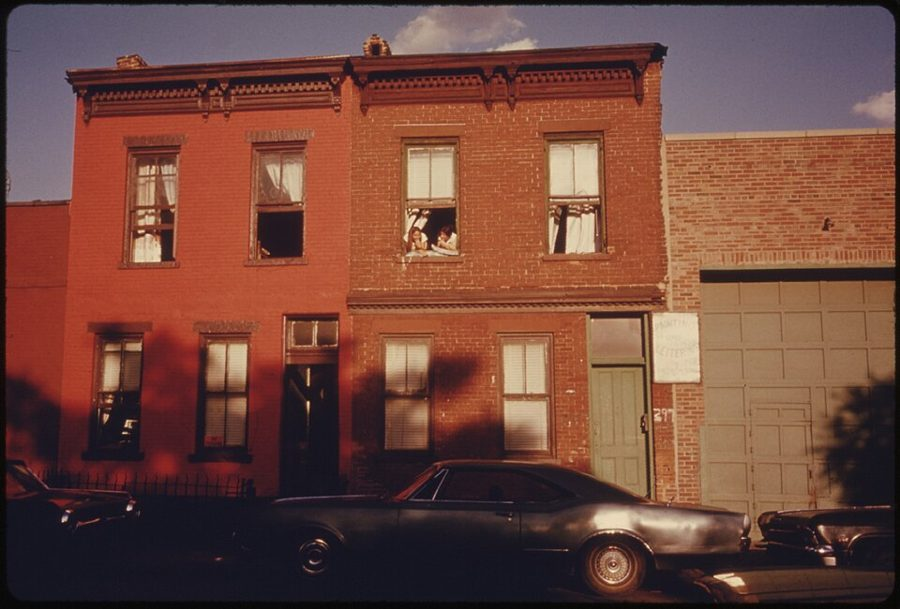
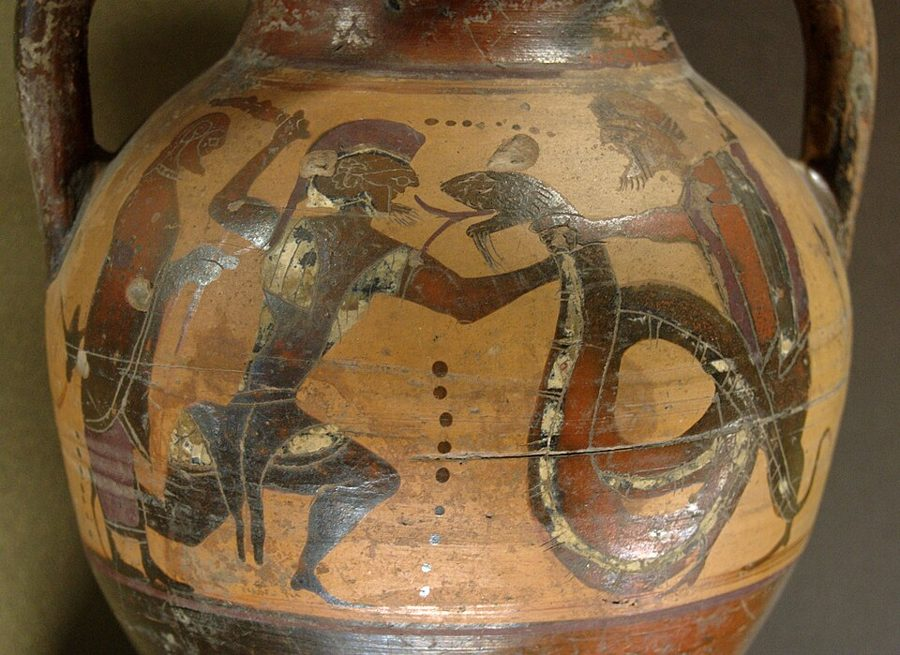

读之前
这一页只有一条报告：9 月 27 日，约 5300 词，写的是几天前的事。查理又借了 Burt 的车，回布鲁克林 Marks Street 的老家。原书这一天没有分隔，本站按场面分成五节，可以分两三次读。读的时候抓两条线：一条是他想好的话和真正说出口的话；一条是往事：他记得的，和别人记得的，对不对得上。
8 月他找到了实验的缺陷：人工提高的智力会退回去，提得越多，退得越快。9 月 15 日结果被证实，Algernon 死了，他把它埋在后院。他开始丢三落四。母亲 Rose 和妹妹 Norma 住在布鲁克林，他十七年多没见过她们；父亲 Matt 6 月给他理过发，没认出他。9 月 21 日他说要去看母亲，先要在心里和她和解。
读的时候带着这几个问题。不用先找答案，读完回来对照「检查一下理解」。
查理去之前想好了怎么开口。留意他想好的，和他真正说出口的。§2 §3
这一页里有好几扇窗。每一次，谁在窗里，谁在窗外？§1 §2 §5
留意查理叙述时怎么称呼母亲：什么时候写 my mother，什么时候写 Rose，当面又叫她什么？§1–§5
9 月 21 日他说，想弄懂母亲是个什么样的人、为什么那样做。读完问问自己：他弄懂了吗？§3–§5
分节地图
这一页只有一条报告：9 月 27 日。原书这一天没有分隔，本站按场面分成五节（带 * 的节号）。读完一节打个勾；每节下面的英文是那一节开头的几个词，在 Kindle 里搜它就能跳过去。全页约 5300 词。
9 月 27 日约 400 词 I should have written this down … 留意眼前的街和他记忆里的街差在哪，还有括号里那句关于窗子的话。 9 月 27 日（续）约 800 词 “Do you want something?” Her voice, … 留意他想好的话和说出口的话，还有他的声音变成了什么样。 9 月 27 日（续）约 1400 词 I tried to keep talking, babbling … 留意 Rose 的每一句话，像是在对谁说。 9 月 27 日（续）约 1700 词 The dog started barking again. The … 门又开了。留意屋里每个人对同一段往事各记得什么。 9 月 27 日（续）约 900 词 At that moment, I sensed that … 留意坐在角落里的那个人，和查理最后回头看见的东西。
背景：书里默认你知道的事
按在书里出现的顺序排，标题前是节号。人名后面括号里是中译本的译名，读者想对照译本时用。
§1 Gordon 一家：到这一页开头你知道的查理家里的人，前面几页是一段一段冒出来的。下面只写到这一页开头为止你知道的事。
Rose 罗丝 母亲。报告 10 里查理第一次想起父母的名字。报告 14 的剪报说她和 Norma 住在布鲁克林 Marks Street。
Matt 马特 父亲，在布朗克斯开理发店。6 月查理去理发，Matt 没认出他，他也没说。
Norma 诺尔玛 妹妹，比查理小六岁左右。当初是她签字同意了手术。剪报里她说十七年多没见过哥哥。
Uncle Herman 赫尔曼叔叔 给人刷房子的。十七年前把查理领到 Donner 的面包店，后来去世了。
Dr. Portman 波特曼医生 报告 14 里父母吵架时提到的医生：Rose 要 Matt 打电话给他，说要送查理去 Warren。
the Meyers 迈尔斯夫妇 §2 才出现：当年住在 Marks Street 那栋房子二楼的房东夫妇。
父亲 Matt
在布朗克斯开理发店
母亲 Rose
布鲁克林 Marks Street
查理
十五岁以前就离开了家
妹妹 Norma
和母亲同住，同意了手术
Uncle Herman（已去世）
离家那一夜，被送到他家
虚线：父母不住在一起
（报告 14 的剪报）
本站示意图：到这一页开头为止，读者知道的 Gordon 一家。只画前面几页出现过的人和事。 §1 布鲁克林的老房子书里没说 Marks Street 在布鲁克林哪一片，只在报告 14 的剪报里给了门牌。纽约外围几个区常见两三层的排屋：门口几级台阶叫 stoop，进门先是一个小门厅（vestibule），再往里是楼梯和各家的门。一栋楼常住两三户，房东有时自己也住在楼里。二战以后，不少家庭搬去了郊区，城里一些老街区慢慢破败下去。书里没说 Marks Street 是怎么败落的。

1974 年 7 月，布鲁克林 Bond Street 的排屋。比书里的时间晚了约十年，和本书无关；Marks Street 是书里的街名。Danny Lyon，公有领域，维基共享资源 §3 「邪眼」（the evil eye）流传很广的民间说法：被人带着嫉妒或恶意看上一眼，就会生病、倒霉。地中海沿岸、中东、东欧都有这种说法，各地都有挡它的护身符和口头禅。孩子长得好、被人夸多了，最怕的就是招来邪眼。书里没交代 Gordon 家祖上是哪里人，读 §3 时知道这个说法就够了。
§4 「苦力」（coolie）这个旧说法coolie 是 19 世纪到 20 世纪初西方对亚洲契约劳工（多是中国人、印度人）的叫法，今天被看作带侮辱的词，不这么说了。当时的美国人也把亚洲农民戴的尖顶斗笠叫 coolie hat。§4 里有一个用灯罩玩的游戏，用的就是这个说法：锥形的灯罩扣在头上，像一顶斗笠（这是本站的推测，书里没写灯罩的形状）。书里照当时的话写。
§4 Atreus 家族和 Cadmus 家族都是希腊神话里世代受诅咒的家族，雅典悲剧反复写它们。Atreus（阿特柔斯）一家：祖上 Tantalus 把亲生儿子煮了请众神吃；Atreus 把弟弟的儿子做成菜给弟弟吃；Atreus 的儿子 Agamemnon 献祭了自己的女儿，回家后被妻子杀死，儿子 Orestes 又杀了母亲。Cadmus（卡德摩斯）建了忒拜城，杀过一条献给战神 Ares 的龙，后代灾祸不断。俄狄浦斯是他的后人：神谕说他会杀父娶母，后来都应验了。

Cadmus 和龙搏斗。古希腊埃维亚岛的黑绘双耳陶罐，约公元前 560–前 550 年。作者不详，公有领域，维基共享资源 词与短语
三类：紫边的「查理拼的」是他拼错的词，先写还原的拼法；黄边的「每个字都认识」是熟词生义、俚语、别人话里的弦外之音；其余是这里用法特别的词。斜体小字是原句里的几个词，在 Kindle 里搜它就能找到原文。这一页查理一个字也没拼错，没有紫边的词条。
§1 9 月 27 日
wire intestines
… an old mattress with wire intestines …
铁丝做的「肠子」（床垫里的弹簧）
床垫被写成一只开了膛的动物；前半句冰箱的「脸被撕掉」也是这样写的。查理这一段描写街景，用的都是身体的词。
tired porches
… in the shade of tired porches.
破旧下陷的门廊
tired 用在东西上是「用旧了、没精神」。站在下面的是一群老人，门廊和人一样累。
stoop
… was on the front stoop, in …
门前的台阶（和平台）
纽约一带的说法，来自荷兰语。见「背景」§1。
appearances
… appearances before herself or her family.
面子，外人眼里的样子
复数的 appearances 是「外表、体面」，keep up appearances 是「撑门面」。整句是说：在她心里，面子排在她自己和家人前面。
streaked with iron
… white and streaked with iron, and …
夹着一缕缕铁灰色
iron 在这里是颜色：铁灰。白发里夹着灰发。
§2 9 月 27 日（续）
my mouth worked
… My mouth worked, I know, and …
我的嘴在动
work 说脸、嘴，是「抽动、动个不停」，不是「起作用」。恰好相反：嘴在动，却没起作用，一个字也没出来。
a dry-mouthed lamb at the udder
… Like a dry-mouthed lamb at the udder.
像一只嘴干的小羊凑在母羊的奶头下
前面那一声 Maaaa 既是叫妈，也像小羊咩咩叫。译本：「就像饥渴的羔羊对着母羊的乳头」。比方保住了，可前面那一声叫唤在中文里只剩叫妈，没有羊叫的那层声音。
sheer
… behind the sheer white curtain of …
（布料）薄得透光的
sheer 常见的意思是「纯粹的、陡峭的」，说布料是「薄而透明」。所以隔着它看得见人。
give way
… The hook gave way and, unprepared …
（门钩）松脱了，撑不住了
give way 是「垮掉、让开、撑不住」。hook 是老式门上那种挂钩式的门闩。
linoleum
… staining her freshly scrubbed linoleum.
油毡地面
一种铺在地上的硬面卷材，好擦洗，当时美国人家的厨房、门厅常铺。译本：「刚刷洗过的地毯」。linoleum 是油毡一类的硬地面，不是地毯；能刷洗也是这个缘故。
the silent boys at Warren
… Like the silent boys at Warren.
Warren 那些不出声的男孩
7 月去 Warren 参观时，查理见过聋哑的男孩（16a 的页面）。
break (a door) down
… I’m going to break it down.
把门撞开
break down 也常指「崩溃、出故障」；宾语是门，就是「砸开、撞开」。
§3 9 月 27 日（续）
not because…, but in spite of it
… her Charlie, but in spite of it.
不是因为……，反倒是不管这一层
整句：不是因为他是她的查理，而是尽管他是她的查理。查理把这一点分得很细。
corrugated drainboard
… the cracked sink with the corrugated drainboard …
带波纹的沥水板
水槽旁边一块刻着槽的斜板，洗过的碗放在上面，水顺着槽流回水槽。
cluck one’s tongue
… Occasionally she clucked her tongue, or …
咂嘴，啧啧作声
cluck 本是母鸡咯咯叫。用舌头发出啧啧声，表示又心疼又不以为然。
get oneself into a mess
… always getting yourself into a mess.
惹麻烦，把自己弄得一团糟
mess 是乱七八糟的局面，不只是脏乱。
one’s eyes go round
… her eyes went round with fright.
吓得眼睛瞪圆了
go + 形容词是「变得……」，go round 是「变圆」。
woodwork
… and that woodwork over there.
（屋里的）门框、窗框、踢脚板这些木头部分
不是「木工活」。这一节她后来擦的也是它。
come about
… Have you come about the electric bill?
为（某事）而来
come about 单用是「发生」；这里 about 后面跟着电费，意思是「你是为电费的事来的吗」。
put the evil eye on
… they put the evil eye on him.
用邪眼给（某人）下咒
见「背景」§3。
evil-I.Q.
… but it was the evil-I.Q.
「邪」智商
I.Q. 的 I 和 eye 读音相同，evil eye 和 evil I.Q. 念出来几乎一样。原文这两个词都是斜体。译本：「他们叫它IQ，但那是邪恶的IQ」。前一句的 evil eye 译成了凶眼，眼睛的眼和字母 I 读音不同，双关只好丢了。
exceptional
… very bright—exceptional, they said.
与众不同的；（教育用语）需要特殊教育的
字面是「出众」。美国教育界也用 exceptional children 指需要特殊教育的孩子。原文这个词是斜体，后面又加了 they said，像是在学别人的话。本站的读法：这可能是学校的说法，书里没有交代是谁说的。
come out of it
… until she came out of it, until …
回过神来，清醒过来
it 指她刚才所处的那种状态。
cock one’s head
… her eyes glistening, and cocked her head.
歪着头
cock 作动词是「翘起、歪向一边」，鸟和狗听东西时常这样。
in one’s own good time
… just waiting His own good time …
在他自己认为合适的时候，不着急
大写的 His 指上帝。
not have the heart to
… I hadn’t the heart to remind …
不忍心
hadn’t the heart 是较老派的说法，口语多说 didn’t have the heart。
a professional man
… become a professional man and make …
专业人士（医生、律师一类）
professional 在这里不是「职业的」，指要读大学、有执照的体面行业。
make one’s mark
… make your mark in the world.
出人头地，闯出名堂
mark 是留下的印记。
§4 9 月 27 日（续）
birdlike
… thin, sharp features, birdlike, pretty.
像鸟一样的（瘦小、轮廓尖）
说的是长相。译本：「小鸟依人般可爱」。小鸟依人说的是娇小可人、惹人怜爱；原文 birdlike 跟在 thin, sharp 后面，说的是瘦、尖、像鸟。
might have (done)
… You might have gotten in touch …
你本该（先联系一下的），带点埋怨
might have done 在这里不是「可能已经」，是「本来应该」。紧跟着的 You should have called 是同一个意思。
bridge club
… the girls at my bridge club.
桥牌俱乐部（里的女伴）
bridge 是桥牌；girls 在口语里也指成年的女性朋友。
spoiled brat
… no longer the spoiled brat of …
被宠坏的小鬼
brat 是讨人嫌的孩子。
Chinese coolies
… pretending we were Chinese coolies—jumping up …
中国苦力（旧说法，带侮辱）
见「背景」§4。今天不这么说了。
duncecap
… a boy with a duncecap on …
笨蛋帽
一般写作 dunce cap：从前学校罚功课差的学生戴的尖顶纸帽，后来成了「笨蛋」的标志。
get even
… I had to get even.
报复，出这口气
even 是「扯平」。
the House of Atreus
… like the House of Atreus or Cadmus …
Atreus 家族
House 大写，指王族或世家，如 the House of Windsor。见「背景」§4。译本：「由于背叛父亲」。这是译本在注里给 Cadmus 家族找的祸根；常见的讲法多把祸根归到他杀死战神 Ares 的那条龙。
on false pretenses
… her affection on false pretenses?
凭着假象（得来）
法律上「诈骗」也用这个说法：obtain money on false pretenses。
kid oneself
… Why kid myself? If I …
自己骗自己
kid 作动词是「开玩笑、哄」。
platitude
… myself speaking in reassuring platitudes.
（安慰人的）套话
紧挨着的上一句 Everything will work out all right 就是一句套话。译本：「船到桥头自然直」。把套话换成了一句中文俗语，听着也是一句顺口的安慰。
§5 9 月 27 日（续）
swoop down
… a hawk ready to swoop down.
（鹰）俯冲下来
§4 用过 birdlike，这里又是一只鸟。
for some insane reason
… for some insane reason, I felt …
不知怎么的，说不出道理地
insane 在这里不是「疯了」，是「毫无道理的」。
presence of mind
… had the presence of mind to …
镇定，临危不乱
不是「心思在场」，是遇事不慌、知道该做什么。
blind alley
… beyond blind alleys, that I would …
死胡同
8 月 11 日那一条，查理第一个词就是 Blind alley，说研究走不通（16b 的页面）。迷宫里的词又回来了。
rave at
… It wasn’t me she was raving at.
冲着（某人）乱吼
rave 是失去控制地大喊大叫；rave about 又是「狂热地夸」，意思差得很远。
a very common experience
… “A very common experience.”
很常见的经历
上一段说的那种「好像一模一样的事以前发生过」，心理学叫 déjà vu（似曾相识）。Alan Brown 2003 年的综述说，约六成的人有过，年纪越大越少。
the sands of knowledge
… the sands of knowledge from slipping …
知识的沙子
把脑子比作沙漏：知识像沙一样往下漏，拦不住。
hold it in
… I held it in for as long …
忍住（不哭出来）
it 指眼泪，原文没说出来。
drum into
… the ridiculous words drummed themselves into …
一遍遍敲进（脑子里）
drum something into someone 是「反复灌输」。下面那首童谣，报告 11 的 5 月 3 日也出现过（11a 的页面）。
查理的文字
拼错的词早就是 0 了，这一页也是。切到「句长」：五节在 9 到 15 个词之间，§4 最短（9.4），那一节对话最多；「长词」只有 3%–4%，16b 那封给 Nemur 的信是 13.5%。写家里的事，用的是家里的话。Rose 的 You shouldn’t have broke 和 gonna 是她的口语，不算查理的。
变化在内容里。第一句就是「我应该马上记下来的」：9 月 21 日他还说要趁没忘赶紧写，这一次隔了三天才写。在门口，这个会好几种语言的人只叫出一声 Maaaa；他说舌头碍事，声音又粗又带哭腔，像很久以前那样说话。这一刻，他说话的样子先回到了从前。
称呼也值得数一数：叙述里一会儿是 my mother，一会儿是 Rose，越往后 Rose 越多；当面一律是 Ma，只有一次是 Mom。
记忆拼图
查理的童年是一段一段想起来的。每段一张卡片：想起了什么，是被眼前的什么勾起来的。年纪是从书里推的，推不出来的写「年纪不详」。读过的页的卡片会汇总到记忆拼图 ，按年纪排好。
隔着前窗看街上的孩子 他记忆里的 Marks Street 到处是玩耍的孩子，而他几乎总是在屋里，隔着前窗看。是重回这条街、发现街上一个孩子也没有时想到的。
§1 楼上的 Meyers 夫妇 二楼的房东夫妇一向待他好：给他糖吃，让他坐在他们的厨房里，和他们的狗玩。是走进门厅、经过那道在噩梦里常见的楼梯时想起的。他知道他们已经不在了。
§2 水槽边洗脸洗手 从后院进来、吃饭前、睡觉前，母亲常在厨房那个带沥水板的水槽边给他洗脸洗手。来客人时，他被藏到地下室。是 Rose 替他洗割破的手时勾起来的：他觉得她回到了二十五年前。
§3 地下室里的灯罩 他约十三岁，Norma 七八岁，两人头顶灯罩在旧床垫上跳。Norma 撞到墙，哭喊说他要杀她；母亲怪 Matt 没看住，用皮带把他打得几乎昏过去。他不确定这是记忆、梦，还是自己编的。Norma 也记得灯罩。
§4 又是那一夜 Rose 拿着刀站在那里，他眼前又是她逼 Matt 当夜把他送走的那一幕（14b 的页面）。他猜 Norma 那夜也醒着，在自己房里看见了，后来当成了一场梦。
§5
第 101 段
她、Alice、父亲、Strauss
她（Rose）
14b：那一夜桌上的切肉刀
这一页：手里的菜刀
Alice
11a：餐桌上她拨弄的餐刀
他连到她身上的梦：女孩手上的刀
父亲（Matt）
14b：理发店的剃刀
刮破了他的脖子
Strauss
手术刀
3 月的那次手术
本站示意图：第 101 段只列了四个人，没说是哪几把刀。这里把前面几页里出现过的刀对上去，是本站的读法。 这一页整个是长篇新加的：1959 年的中篇里没有妹妹，也没有这次探访，父母只在查理的回忆里出现。
值得停下来的句子
With all the things I had learned—in all the languages I had mastered—all I could say to her … was, “Maaaa.”— §2，9 月 27 日，在母亲家门口。本站译：我学了那么多东西，会那么多种语言，站在她面前，能说出口的只有一声「妈——」。
他本来想好了一番话，要「掌控局面」，三言两语把过去和痛苦一笔勾销。句子前半是成年的查理，一层层的修饰，两道破折号；后半只剩一个拉长的音。下一句他自己补了比方：像一只嘴干的小羊凑在母羊身边。他在纸上把这一刻写得这样清楚，正说明他明白自己当时有多说不出话。
Possibly I will never know. Whatever the truth is, I must not hate Rose for protecting Norma.— §5，第 105 段。本站译：也许我永远不会知道。不管真相如何，我不能因为她护着 Norma 就恨她。
书在这里没有给答案。查理先问自己有没有做过什么、让母亲有理由这样怕；他说没有这样的记忆，又说被压下去的念头他也看不见。然后他不再追问，转向一个不靠答案的决定：不恨她，要从她的角度去看。这一句叫她 Rose，不叫母亲。这一段的最后一句是：不原谅她，他就什么也没有了。
读完想一想
1. 查理没有告诉 Norma 他算出的结果，还对她说，母亲吼的是旧查理，「他永远走了，不是吗？」他瞒着她，对吗？
本站的看法 他自己先问了这个问题：凭着假象接受她的亲近，算什么（第 89 段）。他选择不说，理由写在第 111 段：她往后陪着母亲已经够难，他没法把开了头的事管到底。这是体贴，也是回避。他终于演了一回一直想演的大哥，自己知道演不长。读者知道 8 月他算出了什么，那句「不是吗」读起来就格外重。
2. 对母亲的指控，查理说自己没有这样的记忆，但可能永远不会知道；对 Norma 的「梦」，他却断定她那夜一定醒着、看见了，只是压了下去。对自己的记忆存疑，对别人的记忆这么肯定，你怎么看？
本站的看法 「一定」（undoubtedly）是查理的推断，书没有替他证实。被压抑的童年记忆在心理学界从 1990 年代争到今天；比较有共识的是，记忆会被重新拼装，梦和真事会混在一起，旁人反复提起，也可能让人「想起」没发生过的事。灯罩那段，查理自己也说不准是记忆还是梦。本站的看法：这一页里没有谁的记忆能当证词，包括查理的。
3. 这一页开头，查理说他对这条街的记忆几乎都框在前窗里，他总在屋里看别的孩子玩；结尾他回头，看见窗里一个男孩的脸贴着玻璃。这一回，他站在窗子的哪一边？
本站的看法 本站的读法：从中央公园里旁观的男孩（11b），到 14c 窗外那张脸、16b 镜子里的查理，「在看的那个查理」一路跟着他。这一次位置倒了过来：他第一次站在窗外，被屋里的男孩看着。书里没说那张脸是真是幻，第 116 段只写他看见了。
对照今天
成立 后来的事实印证了这个说法部分成立 一部分对，一部分被后来的事改了被改写 后来的事实推翻了它，或者完全变了样书里的说法：母亲记不得事，是人老了、老糊涂了（Norma，§4 第 67 段）
书里 Norma 用的词是 senility（衰老、老年糊涂），说 Dr. Portman 劝她把母亲送进养老院，她不忍心。书里没有给 Rose 下诊断，只写了她一阵认得人、一阵认不得，话题乱跳，一遍遍擦洗。
当时 senility、senile dementia 常被看成人老了的自然现象；阿尔茨海默病被当成少见的、中年发作的病。1976 年，神经科医生 Robert Katzman 在《Archives of Neurology》的社论里主张：老年的痴呆多半就是阿尔茨海默病，是美国的主要死因之一。
今天 世界卫生组织的说法是：失智症（dementia）不是正常衰老的一部分。年龄是最大的风险因素，但它是由疾病引起的综合征，认知能力的下降超出正常老化。阿尔茨海默病是最常见的原因，约占六到七成。全世界患者在五千五百万以上。核对于 2026-10。依据：世界卫生组织失智症概况，Katzman（1976）。
检查一下理解
先在心里答，再点开。答错的那题，回书里把对应那一条再读一遍。
1.（§1）查理到的时候，母亲在做什么？他怎么解释她这样做？ 天又冷又有风，她在门外擦一楼的窗。查理说她一向这样，要让邻居看见她是个多好的妻子和母亲：在她心里，别人怎么看排在第一位。
2.（§2）查理的手是怎么受伤的？他为什么把手揣进口袋？ 母亲躲进门里，他拍打门上的玻璃，玻璃裂了，割破了手。他把流血的手揣进口袋，免得血滴在她刚擦过的地上。
3.（§3）查理留给母亲的是什么？她以为那是什么？ 他写的科学报告《Algernon-Gordon 效应》，名字里有他自己。她先问是不是一本杂志。他想让她拿给别人看，证明儿子不是笨蛋。
4.（§4）Norma 是怎么知道哥哥还活着的？查理怎么知道狗叫什么？ 母亲一直说他死在了 Warren。直到七个月前那位教授（Nemur）找上门，Norma 才知道他还活着。狗名是报告 12 那段回忆：Norma 考了 A 想养狗，要叫它 Napoleon，Matt 没答应。
5.（§4）灯罩那一次，Norma 为什么说哥哥要害她？ 学校里的孩子拿她哥哥画画、写「白痴的妹妹」笑她，Emily Raskin 的生日会也没请她，她认定都是因为查理。那天在地下室，她想出这口气，就撒了谎。
6.（§5）查理为什么不告诉 Norma，她那个「梦」可能是真的？ 他认为她小时候那一夜醒着、看见了，后来压下去当成了梦。他不想加重她的负担：她以后陪着母亲已经够难，他也没法把开了头的事管到底。
用一句话说这一页：
精彩回顾
隔几周回来，先看这几张卡片。想不起来的那张，点节号回到这一页，再回书里那一条。
一句话： 查理回到老家，母亲时而认得他、时而认不得，妹妹认了他，他当年被送走的原因也摊开了。
一声 Maaaa 想好的一番话一句也没说出来。会好几种语言的人站在门口，只叫出一声拉长的「妈」，像小羊叫。
§2 水槽边的手 他拍碎门上的玻璃，割破了手。Rose 看见血，把他领到水槽边，像二十五年前那样替他洗，嘴里念着他总是惹麻烦。
§3 印着他名字的报告 他把《Algernon-Gordon 效应》留给母亲，让她可以告诉别人儿子不是笨蛋。她先问那是不是一本杂志。
§3 地下室的灯罩 十三岁的哥哥和七八岁的妹妹顶着灯罩在床垫上跳。妹妹撞了头，说哥哥要杀她，他挨了一顿皮带。如今 Norma 承认，那是她撒的谎。
§4 四把刀 Rose 拿起菜刀，喊他离妹妹远点。他脑子里闪过：她有刀，Alice 有刀，父亲有刀，Strauss 有刀。
§5 窗上的脸 他哭着走回车，Three Blind Mice 在脑子里一遍遍响。回头一看，屋里窗上贴着一张男孩的脸，在看他。
§5